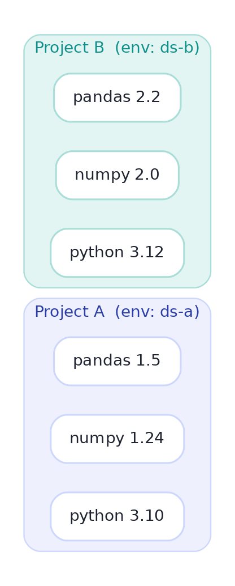

Virtual Environments & Dependencies
Make your code run the same on any machine — the cure for 'works on mine'.
"It works on my machine" is the most expensive sentence in data science. It usually means your code secretly depends on the exact package versions you happen to have installed — and the moment a colleague, a server, or future-you has different ones, it breaks. Virtual environments fix this by giving every project its own isolated set of packages, and a requirements file records them so anyone can rebuild the exact setup. This is the boundary between a script and software people can trust.
Why isolationThe problem: one global install, many projects
Install packages globally and every project shares one pile. Project A was built against pandas 1.5; you pip install pandas 2.2 for Project B; now Project A silently breaks because a function changed. A virtual environment gives each project its own Python and its own packages, so their versions can't collide:

The venv workflowCreate, activate, install
Python ships with venv. Three moves: create an environment (a folder), activate it (so python and pip now point inside it), then install what you need — those installs land in the environment, not globally:
python -m venv .venv # create an env in a .venv/ folder
source .venv/bin/activate # activate (Windows: .venv\Scripts\activate)
pip install pandas scikit-learn # installs INTO .venv, not globally
python churn.py # runs with exactly these packages
deactivate # leave the env when done$ python -m venv .venv $ source .venv/bin/activate (.venv) $ pip install pandas scikit-learn Successfully installed pandas-2.2.2 scikit-learn-1.5.0 ... (.venv) $
The (.venv) that appears in your prompt is Git-style peace of mind: it tells you which environment is active. Add .venv/ to your .gitignore — you record the recipe (requirements), never the built environment itself, which is large and machine-specific.
requirements.txtPinning: the recipe anyone can rebuild
An environment is worthless to others unless they can recreate it. pip freeze writes the exact installed versions to a file; anyone (or any server) rebuilds the identical setup with one command:
pip freeze > requirements.txt # snapshot exact versions
# -- someone else, or a server, later: --
python -m venv .venv && source .venv/bin/activate
pip install -r requirements.txt # rebuild the SAME environment$ cat requirements.txt pandas==2.2.2 scikit-learn==1.5.0 numpy==2.0.1
Pin with == for anything you need to reproduce (analyses, deployed models). Loose specifications like pandas>=2.0 are convenient but let versions drift, and "it worked last month" becomes a mystery. A pinned requirements.txt (or a lockfile) is what makes a result reproducible — the subject of lesson 3.5.
★ Key points to remember
- A virtual environment gives each project its own isolated packages, so upgrading one project can't break another.
- Workflow:
python -m venv .venv→ activate →pip install(lands inside the env) →deactivate. .gitignorethe.venv/— commit the recipe, not the built environment.pip freeze > requirements.txtsnapshots exact versions;pip install -rrebuilds them elsewhere.- Pin with
==for anything that must be reproducible; loose ranges let versions silently drift.
pip install -r the exact versions you used◆ Practice▸
Show solution & reasoning
mkdir fraud && cd fraud → python -m venv .venv → source .venv/bin/activate (Windows: .venv\Scripts\activate) → pip install pandas matplotlib → pip freeze > requirements.txt → add .venv/ to .gitignore. Now anyone can reproduce it with python -m venv .venv && source .venv/bin/activate && pip install -r requirements.txt.
Show solution & reasoning
When you need non-Python dependencies or specific system libraries — e.g. a particular CUDA/cuDNN for GPU deep learning, or heavy geospatial/scientific stacks (GDAL, certain BLAS builds) that are painful to compile. Conda manages those binary dependencies and Python versions together across OSes. For pure-Python projects, venv + pip (or modern tools like uv/poetry) is lighter and perfectly sufficient.
◎ Deep dive: pip vs conda vs poetry/uv, lockfiles, and where Docker takes over▸
The tool landscape, briefly. venv+pip is the built-in baseline. conda additionally manages non-Python binaries and Python itself (great for GPU/scientific stacks). poetry and the very fast uv add proper dependency resolution and lockfiles — a poetry.lock/uv.lock records not just your direct packages but every transitive dependency's exact version and hash, so an install is bit-for-bit repeatable. For serious projects, a lockfile beats a hand-maintained requirements.txt.
Environments end where the OS begins. A virtual environment pins Python packages, but not the operating system, system libraries, or environment variables. When those matter — deploying a model, guaranteeing a teammate's setup exactly — you graduate to a container (Docker), which packages the whole userland. Think of it as a spectrum of reproducibility: requirements.txt → lockfile → Docker image, each pinning more of the world at more cost. Match the level to the stakes.